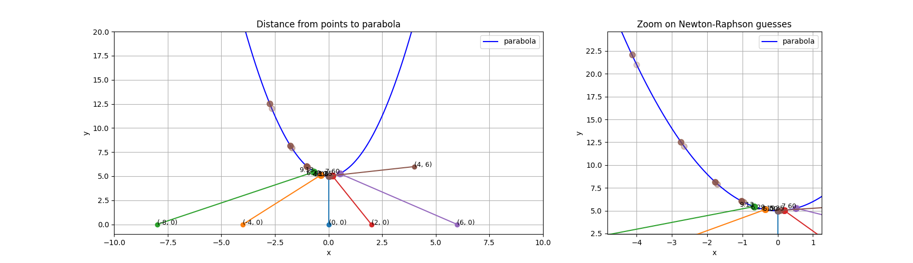
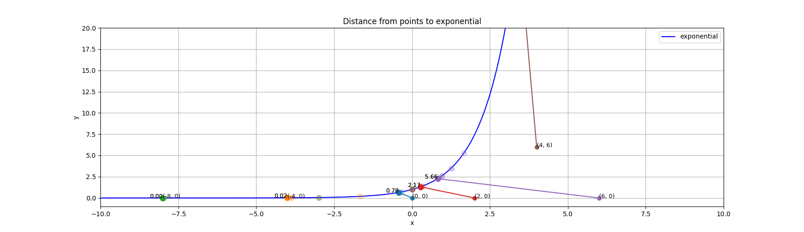
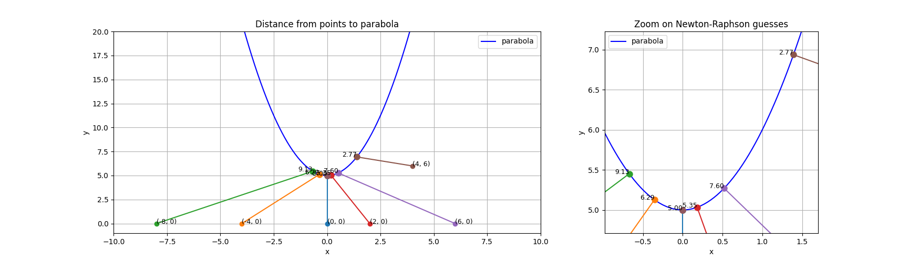
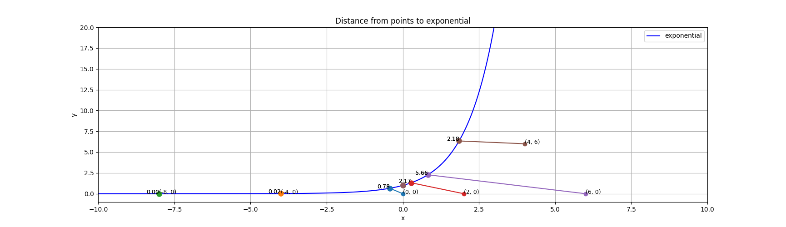

Part 1: Finding the shortest distance from a point to a function
Analytical Method
Attempting the analytical method (finding the derivative of the distance function, setting to 0, and solving for the critical points) resulted in fairly straightforward calculations. Calculator use was required to compute the final distance values. The main reason this was so simple to do by hand is because the distance function itself is so simple to derive.
Full handwritten calculations below.
Numerical Methods
Each of the numerical methods was employed for two iterations rather than engaging with the full convergence process or setting a tolerance value.
Newton-Raphson Method
To use the Newton-Raphson method, I took the derivative and double derivative of the distance function. Then, for every given point, I plugged in the (x_i, y_i) values and applied an initial guess of x = 0. Applying the Newton-Raphson formula gave me a new guess for my second iteration, which yielded my final distance estimates for each point. It can be observed that all of the resulting distances are close to the analytical solutions.
Bisection Method
For the bisection method, I selected an initial interval of x_1 = -1 to x_2 = 1. After calculating the function values at the endpoints to ensure there was a sign change (meaning that it would cross the x-axis), I determined the midpoint x_3 and plugged it into the function. Depending on the sign of this new function value, I selected another interval spanning either x_2 to x_3, or x_1 to x_3. The same process was applied (verify the interval crosses the x-axis, calculate the midpoint, plug the midpoint into the function). I stopped at this second iteration for every given point.
The Code
Newton-Raphson Method in Python
Implementing Newton-Raphson method in Python was overall straightforward. Since there are no ways to derive functions in Python analytically, I had to define the first and second derivatives manually. The plots below show the five given points, and the previous iterations' guesses are indicated by the reduced alpha valued dots along the parabolic and exponential curves.


However, there was a stumbling block upon testing a new point, (4,6). I noticed that this method actually fails to minimize the distance for both the parabolic and exponential functions. This is because the Newton-Raphson method fails to converge when the second derivative evaluates to close to zero or negative. This makes sense. If the second derivative is close to zero, it can cause huge jumps in the iteration process since the denominator in the update formula will have become very small. When the second derivative is negative, the distance function quadratic model opens downwards. That means the method will actually converge to an inflection point that is the maximum, not minimum. When applied in the Newton-Raphson method, it can be observed that the resulting x will have its sign flipped if the first derivative is negative. This will result in steps moving in the wrong direction.


To solve this, I implemented a negative check in the Newton-Raphson function to prevent the divergence case. When the second derivative is negative, I apply a 0.1-scaled gradient step (x = x - 0.1 * df(x)), without any division by the second derivative. This not only decreases the magnitude in which the x guess changes, but prevents any sign flip caused by a negative second derivative in division.


With this new fix applied, the method now converges for (4,6) and the other points' minimized distances remain accurate. Notice that the distance for the the most negative values, like (8,0), appear as 0.0. These aren't actually 0 - the full distance value is actually ~0.00035. The remaining digits are cut off by the display format's precision. Also note that it's not as easy to view the previous iterations' guesses on the parabolic plots as it is for the exponential. This is due to the overlapping points appearing so closely to each other that they appear to occupy the same pixel.
import numpy as np
import matplotlib.pyplot as plt
# Newton-Raphson method function
def newton_raphson(f, df, d2f, iterations = 10):
x = 0
hist = [x]
for i in range(iterations):
if d2f(x) < 1e-12:
x = x - 0.1 * df(x)
else:
x = x - df(x) / d2f(x)
hist.append(x)
return x, hist
def set_up_functions(x0, y0, func_type):
if func_type == 'parabola':
y = lambda x: x**2 + 5 # Parabolic function
f = lambda x: (x-x0)**2 + ((x**2 + 5) - y0)**2 # Distance function
df = lambda x: 2*(x-x0) + 2*((x**2 + 5) - y0)*(2*x) # First derivative
d2f = lambda x: 2 + 2*(2*x)**2 + 2*((x**2 + 5) - y0)*(2) # Second derivative
elif func_type == 'exponential':
y = lambda x: np.exp(x) # Exponential function
f = lambda x: (x-x0)**2 + (np.exp(x) - y0)**2 # Distance function
df = lambda x: 2*(x-x0) + 2*(np.exp(x) - y0)*np.exp(x) # First derivative
d2f = lambda x: 2 + 2*(np.exp(x))**2 + 2*(np.exp(x) - y0)*np.exp(x) # Second derivative
root, history = newton_raphson(f, df, d2f) # Call Newton-Raphson method
return y, root, history
def plot_distances(points_list, func_type, history):
zoom = func_type == 'parabola'
if zoom:
fig, (ax_full, ax_zoom) = plt.subplots(1, 2, figsize=(20, 5), gridspec_kw={'width_ratios': [2, 1]})
axes = (ax_full, ax_zoom)
label_ax = ax_zoom
else:
fig, ax_full = plt.subplots(figsize=(20, 5))
axes = (ax_full,)
label_ax = ax_full
x_func = np.linspace(-10, 10, 1000)
y = x_func**2 + 5 if func_type == 'parabola' else np.exp(x_func)
guess_x, guess_y = [], []
for ax in axes:
ax.plot(x_func, y, 'b-', label=func_type)
for i, (x_0, y_0) in enumerate(points_list):
colour = plt.cm.tab10(i)
y, root, history = set_up_functions(x_0, y_0, func_type)
distance = np.sqrt((root - x_0)**2 + (y(root) - y_0)**2)
for ax in axes:
ax.plot([x_0, root], [y_0, y(root)], '-', color=colour) # Line from point to function
ax.plot(x_0, y_0, 'o', color=colour)
for k, x_guess in enumerate(history):
ax.plot(x_guess, y(x_guess), 'o', color=colour, alpha=(k + 1) / len(history), markersize=8)
guess_x += list(history) + [root]
guess_y += [y(x_guess) for x_guess in history] + [y(root)]
ax_full.text(x_0, y_0, f'({x_0}, {y_0})', fontsize=9, ha='left')
ax_full.text(root, y(root), f'{distance:.2f}', fontsize=9, ha='right', clip_on=True)
label_ax.text(root, y(root), f'{distance:.2f}', fontsize=9, ha='right', clip_on=True)
ax_full.set_xlim(-10, 10)
ax_full.set_ylim(-1, 20)
if zoom:
# Zoomed view: limits come from the guesses only
x_pad = 0.15 * (max(guess_x) - min(guess_x) + 1e-9)
y_pad = 0.15 * (max(guess_y) - min(guess_y) + 1e-9)
ax_zoom.set_xlim(min(guess_x) - x_pad, max(guess_x) + x_pad)
ax_zoom.set_ylim(min(guess_y) - y_pad, max(guess_y) + y_pad)
ax_zoom.set_title('Zoom on Newton-Raphson guesses')
ax_full.set_title(f'Distance from points to {func_type}')
for ax in axes:
ax.set_xlabel('x')
ax.set_ylabel('y')
ax.legend()
ax.grid()
plt.show()
def main():
### EXAMPLE 1: Distance from point to a parabolic function.
points = [(0,0), (-4,0), (-8,0), (2,0), (6,0), (4,6)] # Point coordinates
function = 'parabola'
for x0, y0 in points:
y, root, history = set_up_functions(x0, y0, function)
distance = np.sqrt((root - x0)**2 + (y(root) - y0)**2)
print(f"Estimated root ({function} to point equation) after 10 iterations: {root}")
print(f"Estimated distance from point ({x0}, {y0}) to {function}: {distance}")
plot_distances(points, function, history)
### EXAMPLE 2: Distance from point to an exponential function.
function = 'exponential' # Function type
for x0, y0 in points:
y, root, history = set_up_functions(x0, y0, function)
distance = np.sqrt((root - x0)**2 + (y(root) - y0)**2)
print(f"Estimated root ({function} to point equation) after 10 iterations: {root}")
print(f"Estimated distance from point ({x0}, {y0}) to {function}: {distance}")
plot_distances(points, function, history)
if __name__ == "__main__":
main()Part 2: Fitting points to an equation
Analytical Method
This part has two objectives: fitting a line to the provided points (0,0.5), (2,3.5), (1,1.5), (3,7.5), and fitting a parabola to the same points.
Fitting to a line
As the assignment specifies, I minimized the squared error. I established a ρ (which is simply the sum of every permutation of (y*(x) - y(x))^2, where y*(x) is the linear equation with (x_i, y_i) substituted in). With this ρ, I was able to take its partial derivatives with respect to both parameters of interest (intercept and slope, represented as C_0 and C_1 respectively). This created a system of equations that I could solve and create my line of best fit equation.
Fitting to a parabola
The strategy for a parabola proved slightly different. Rather than setting up another MSE equation, I set up a system of 4 equations. For each of the points given, I substituted their x and y values into the parabolic equation, y = Bx^2 + Cx + D. This left a system of 4 equations with 3 unknowns. After converting to matrix form (where A contained the coefficients for each x term, x contained the B, C, and D coefficients, and b contained the y values), I was able to calculate A^T * A and A^T * b to give me the coefficients and constants for the corresponding augmented matrix. Solving this matrix (using a calculator as the calculations were complex and time-consuming to do by hand), I was able to solve for B, C, and D to create an analytically-derived parabolic equation.